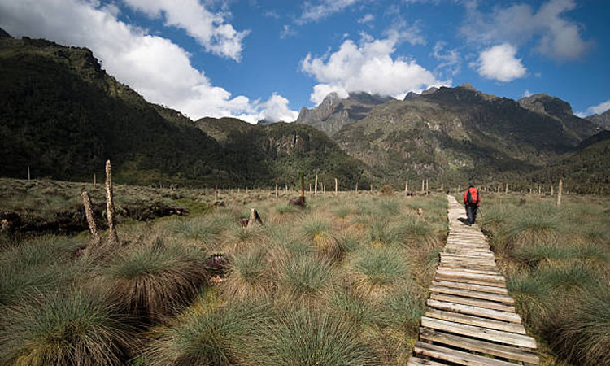

Three (3) Days Mountain Rwenzori hiking
This is one of the most physical and yet still most interesting of hikes you can do while in Uganda. Hikers and
mountain trekkers that plan to embark on the trek of Rwenzori mountains can either use the Rwenzori central circu
it or the Kilembe trekking route for this interesting trekking up hill to climb Rwenzori Mountains national park
n Uganda, this tour can bee booked based on the number of days you have at hand and levels of physical ability to
take on this adventure to hike up to the top of the snow capped mountain.
The mountain lies close to the Equator in the south. We do organize trip to the area and can arrange for you one
based on the days you have and guarantee your safety and security while on this trip with us.

Trip Summary
Day 1:Travel to Kasese
Day 2:Transfer to Sine Camp
Day 3:Descend back to the base of the mountain.

Day 1: Travel to Kasese
After breakfast, you will be picked up from either the Airport/Guest House to start your 3 Day Mountain Rwenzori
hiking trip to Kasese. The drive will take you around 8 hours. You will have a stop over in mubende for lunch a
nd then proceed with your journey to Kasese for overnight at a hotel in area as you prepare yourself for the nex
t days trek.
Accommodation option:
Hotel Margherita (Midrange)
Rwenzori Base Mountain Camp
DAY 2: Transfer to Sine Camp
You will transfer to the footsteps of the mountain to start the Climb up from 1,450 to Sine Hut 2,680m where you
spend a night. This hike starts from the valley floor through tall forest trees of the Afro Montane Forest Zone
and continues with a steady climb with multitudes of birds and a chance of seeing blue monkeys scampering off thr
ough the forest. At times visitors may see troupes of 15 to 20 black and white Colobus monkeys as they swing thr
ough the treetops.
There are rare sightings of the L’Hoest monkey, which are part of the Bukonzo cultural emblems and are pro
tected by the virtue of the King or Omusinga or you may hear wild chimpanzee in the distance. There is wide varie
y of plant species from forest trees to bamboos thickets, low shrubs, flowers, fungi, and with many moss and liche
n covered vines hanging from the tall trees creating an awesome appeal. Enock’s Falls are just 200 meters from Sin
e Hut and offer a splendid opportunity to capture a great screensaver for your memories.
At Sine Camp 2,596 meters we have wooden huts set between tall forest trees on a narrow ridge where you may
sit and enjoy the beauty of the Afro Montane forest while you look down at a fantastic waterfall crashing over the
rocks far below. For those who are fit and want to proceed to Kalalama Camp at 3,134 metres may do so and apart f
rom the fantastic views gives you more time at Mutinda Camp where you may climb up to Mutinda Lookout at 3,975 me
tres.
Day 3: Descend back to the base of the mountain.
After breakfast return back down the mountain and set off back to Kampala Entebbe to End the 3 Day Mountain Rwenzor
i hiking tour with your flight out.
Additional accommodation can be arranged for extra cost. You’ll be dropped off at the airport (or hotel)
Take Note
Small Group Safari: Max 6 People per group
Tour Can Depart any day
Tour can be customized
Solo travelers can join this tour
Age Limit: 15 years and above

Safari Booking Quotation
Inclusions
Park fees
Accommodation
A professional driver/guide
Transport to and from
All transportation
All Taxes/VAT
Meals
Drinking water and fruits
Excludes
International flights
Additional accommodation before and at the end of the tour
Tips and Visa
Personal items
Government imposed increase of taxes and or park fees
Book Now